Intro
Radiance cascades is a technique that massively improves global illumination without much extra
cost or
accumulation.
In this article I'll go over the recent technique of Ray Splitting which allows
the use of RC
(Radiance cascades)
in 3D without huge costs, and how to
implement this.
Radiance Cascades
For this article i'll assume you already know the basics of RC,
if not I really recommend the
interactive tutorial from jason.today or the article from
MAX
Here is a quick recap as well
RC Recap
The main point of RC is combining the samples/rays for our GI in a way that utilizes them most
effectively.
This results in a more correct output with less samples.The way of combining
this
relies on the Penumbra hypothesis.
Which states that, when you are
close to a light source you need less rays (less angular resolution) to find the light.

Inversely when you are close to a light you need more probes (spatial resolution) to get correct shadows
By merging layers ranging from (high resolution, low direction count) count to (low resolution,
high direction count) that correspond to a interval of the ray.
we get best of both
Probes
Problems of 3D
RC Requires storing our light into a grid of probes,
This becomes a problem in 3D due to the
massive memory cost that introduces. since probe counts scale ^3

Even if we would just put this around the camera it would cost way too much memory to get a
decent resolution.
Luckily we only need probes where we need light, which is on all visible
surfaces.
So we need a way to only put probes on visible geometry.

Sparse probes
To only spawn probes on visible surfaces, we reconstruct worldpositions from the screen.
We
round these positions to a grid of cells
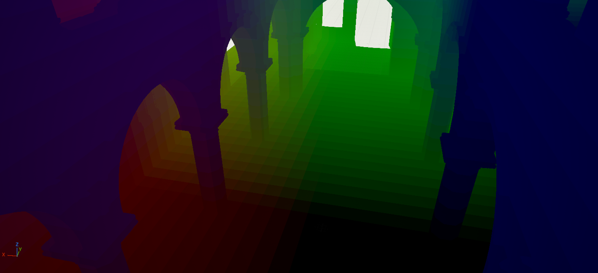
To store our light in these cells we need a buffer of probes.
To allocate this we use a
hashtable, creating a hash for each cell allows us to quickly allocate a slot for each of these
without much fighting between threads.
We also store a AppendBuffer with a list of the probes
we allocated, this will be used later to launch our next passes indirectly.
(this somewhat goes against the use of the hashtable, but the table
will be needed more later)
We clear and fill this table every frame and with this
we get a table of sparsely allocated probes.
// HLSL, Compute: "GatherC0Probes.hlsl"
//For now most kinds of hash tables are fine
#include "HashTable.hlsl"
RWStructuredBuffer‹uint› ActiveProbes;
RWStructuredBuffer‹uint› ActiveCounter;
[numthreads(8, 8, 1)]
void MainCS(uint2 DispatchThreadId : SV_DispatchThreadID)
{
//We run over every pixel, to allocate a probe at its world position
uint2 PixelId = DispatchThreadId;
// Check that we are in scope
if (any(float2(DispatchThreadId) >= ViewportPixelSize)) {
return;
}
float2 UV = float2(PixelId) + 0.5f / float2(ViewportPixelSize);
float DeviceZ = SampleSceneDepth(UV);
if (DeviceZ == 0) {
return;
}
//We can reconstruct the world position from the depthbuffer using our camera view, most engines have a helper for this
float3 WorldPos = ReconstructWorldPositionFromDepth(DeviceZ);
float VoxelSize = BaseVoxelSize;
int3 Cell = int3(floor((WorldPos / VoxelSize)));
//For our Key we simply shift the bits of the cell into 1 big uint
//Later we store more info in here so we dont use all the bits
//Make sure to add + (1u ‹‹ (BitsPerInt - 1)) to each value to make them unsigned
//So our key is
//Bits:
// xxxxxxxxxxxxxxxxyyyyyyyyyyyyyyyyzzzzzzzzzzzzzzzz0000000000000000
uint64_t Key = PackProbeKey(Cell);
//Add our key to the table
//Get a random index from our Key, most hashing functions work on 32 bit uints so we do this
uint Index = Hash(uint(Key) ^ Hash(uint(Key >> 32)));
bool Added = HashTableAdd(Key, Cascade: 0, [&]: Index);
//Added should always be true here if you cleared the hash table
if (Added)
{
//Add to active probes for next passes
uint Counter;
InterlockedAdd(ActiveCounter[0], 1, Counter);
ActiveProbes[Counter] = Index;
}
}
We can visualize/debug our probes in a seperate pass
// HLSL, Compute: "Output.hlsl"
#include "HashTable.hlsl"
#include "ColorFromHash.hlsl"
[numthreads(8, 8, 1)]
void MainCS(uint2 DispatchThreadId : SV_DispatchThreadID)
{
//Go over every pixel and check if the probe is there
uint2 PixelId = DispatchThreadId;
// Check that we are in scope
if (any(float2(DispatchThreadId) >= ViewportPixelSize)) {
return;
}
float VoxelSize = BaseVoxelSize;
int3 Cell = int3(floor((WorldPos / VoxelSize)));
uint64_t Key = PackProbeKey(Cell);
uint Index = Hash(uint(Key) ^ Hash(uint(Key >> 32)));
bool Found = HashTableFind(Key, Cascade: 0, [&]: Index);
if (Found) {
//Since our hashtable is unstable, using debugindex will flicker, you can use the key instead for now.
Output[PixelId] = float4(ColorFromHash(Hash(DebugIndex)), 1.0);
}else {
Output[PixelId] = float4(1,0,0,1);
}
}
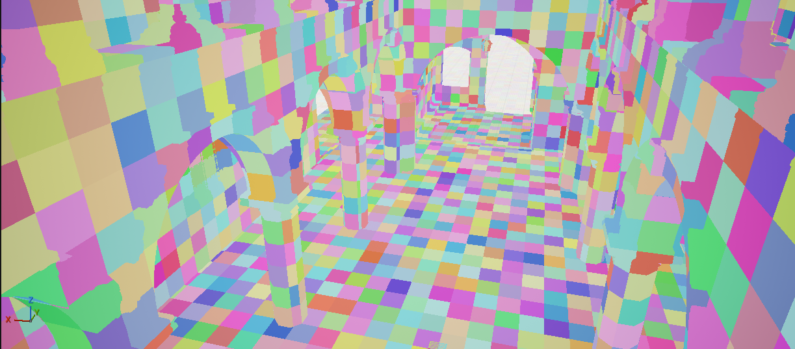
Cascades
With this gather pass we now have a single cascade of probes allocated.
However we need
multiple cascades of lowering resolution to do RC.
For this we need to fill seperate hashtables for each cascade, we could just re-run our shader
for each cascade but that would be very innefficent.
We already have our highest detail
probes and there are significantly less of them than we have pixels.
So instead of running
over all pixels again, we can just go over all the probes we just allocated, for each of these
we just halve their position to get the cascade above it. Any duplicates we get from this are
handled by the hashtable.
We run this bottom up for all cascades.
The number of cascades we need is somewhat arbitrairy based on your scene size i'll be using 4
// HLSL, Compute: "FillCascades.hlsl"
#include "HashTable.hlsl"
// Since each pass continues from the last,
// this starts of with the counter from the gather, and then is set to the counter we're filling for the next cascade.
// So each pass launches the next
RWStructuredBuffer‹uint› PrevActiveProbes;
RWStructuredBuffer‹uint› PrevActiveCounter;
RWStructuredBuffer‹uint› NextActiveProbes;
RWStructuredBuffer‹uint› NextActiveCounter;
//The cascade we are filling, so this starts at 1
uint Cascade;
[numthreads(64, 1, 1)]
void MainCS(uint DispatchThreadId : SV_DispatchThreadID)
{
uint ProbeId = DispatchThreadId;
// Check that we are in scope (since the dispatch gets ceiled to group count)
if (ProbeId >= PrevActiveCounter[0])
{
return;
}
// Get the actual key out of the active list which just contains hashtable id's
// Im adding the cascade since my hashtable stores the seperate tables in 1 big buffer
uint64_t ProbeKey = HashTable[(Cascade-1) * HashTableSize + PrevActiveProbes[ProbeId]];
// Since our key is just bit shifted positions we can unpack it again.
ProbeKeyInfo KeyData = UnpackProbeKey(ProbeKey);
// Get parent key by halving the position of our current key
uint64_t HighKey = PackProbeKey(KeyData.Cell >> 1);
uint Index = Hash(uint(HighKey) ^ Hash(uint(HighKey >> 32)));
if (HashTableAdd(HighKey, Cascade, Index))
{
// Fill in the active list which we use for next pass.
uint Counter;
InterlockedAdd(NextActiveCounter[0], 1, Counter);
NextActiveProbes[Counter] = Index;
}else {
// Should be impossible if we cleared the table correctly
}
}
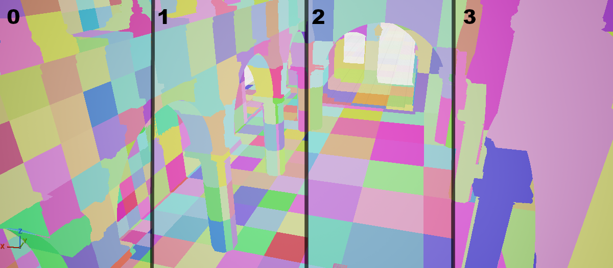
Note that when visualizing your higher cascades you need to shift your positions when creating the key
Rays
From probes vs from screen
Normally to get the lighting at every probe, we shoot a set amount of rays into random directions
from each
probe.
This however comes with quite some issues.
Ray counts become very big with good
enough spatial and angular resolution.
But the main problem is probe positioning, since our
probes are in a grid they are not aligned with the surfaces which can cause a bunch of rays to
shoot below the surface.
This can cause overocclusion and light leaking, and also makes it
so we cannot shoot rays in just a hemisphere.
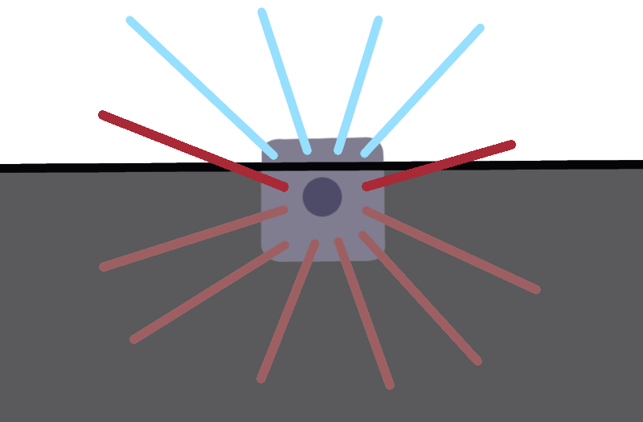
The 2 red rays in this probe here got unfairly blocked because the probe is too far into the ground
This would cause dark splotches in our lighting.
So instead we can trace the rays from
reconstructed screen positions instead and put these into the probes that are at that
spot.
This way rays are send from real geometry avoiding this problem.
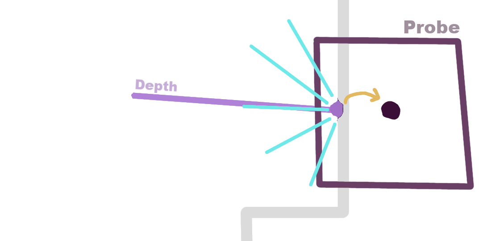
Here the blue rays are sent from the position gotten from the screen, then moved into the closest probe.
Splitting into intervals
However in RC each cascade does not contain the full ray, only a interval/segment of it.
Sending multiple rays for each interval at each pixel would be quite inefficient.
Instead we do it the other way around, we trace the full ray and pick the interval (and thus
cascade) that it would've hit in based on its hit distance.
We fill the hit interval's cascade with the lighting, and the mark transparancy / that a ray
traveled through them in the cascades below the hit one.
We store this in multiple bins per probe, one for each direction, we need to lay out these
directions evenly and most importantly in a way that scales so that our merging evenly combines
them into lower cascades.
For shooting each ray we can just pick a random direction in a hemisphere at our hit.
// HLSL, Compute:
#include "HashTable.hlsl"
#include "EncodeDirection.hlsl"
RWStructuredBuffer‹uint4› TotalRadiance;
RWStructuredBuffer‹uint› Weights;
RWStructuredBuffer‹uint› DepositCounts;
static const uint BaseDirections = 4; // This means 32 actual direction bins
static const uint kNumCascades = 4;
static const float kC0Len = 1.5958; // sqrt(2*BaseDirections*BaseDirections / (4*PI)),
[shader("raygeneration")] void MainRG()
{
uint2 PixelCoord = DispatchRaysIndex().xy;
float2 UV = float2(PixelId) + 0.5f / float2(ViewportPixelSize);
FGBufferData GBuffer = GetGBufferDataFromSceneTextures(UV);
float DeviceZ = SampleSceneDepth(UV);
if (DeviceZ ‹= 0) {
return;
}
float3 WorldPos = ReconstructWorldPositionFromDepth(DeviceZ);
//Also sample worldnormal from GBuffer, could also reconstruct from depth dx/dy
float3 Normal = SampleWorldNormal(UV);
FRayDesc Ray;
// Add a bit of offset along the normal, this is needed since reconstructing from the depth is not perfectly accurate.
Ray.Origin = WorldPos + Normal * 0.1;
uint64_t TopKey = MakeProbeKey(WorldPos, CameraPos);
uint TopProbeIndex = Hash(uint(TopKey) ^ Hash(uint(TopKey >> 32)));
bool Found = HashTableFind(TopKey, Cascade: 0, [&]: TopProbeIndex);
if (!Found)
{
//Shouldn't really be possible unless there is a mismatch with our gather
return;
}
float3 Radiance = 0;
Ray.Direction = RandomHemiSphere(Normal).xyz;
//Trace the actual ray, this should trace 1 hit with direct lighting applied.
FMaterialClosestHitPayload Payload = TraceRayWithLighting(Ray, ...)
//Fill into containing cascades
// Find the cascade the ray hit inside based on its hit length
uint RayHitCascade = kNumCascades - 1;
if (Payload.IsHit())
{
uint HitCascade = ceil(max(0.5 * log2(Payload.HitT / (kC0Len * BaseVoxelSize)), 0.0));
//Clamp to the highest cascade we have, since we cannot allocate infinite cascades
RayHitCascade = min(HitCascade, kNumCascades - 1);
}
//We fill the hit cascade and the ones before it, since the ray traveled through those intervals and not the ones after
for (uint Cascade = 0; Cascade ‹= RayHitCascade; ++Cascade)
{
uint64_t Key = MakeProbeKey(WorldPos, CameraPos);
ProbeKeyInfo KeyData = UnpackProbeKey(Key);
uint64_t CascadeKey = PackProbeKey(KeyData.Cell >> Cascade);
uint ProbeIndex = Hash(uint(CascadeKey) ^ Hash(uint(CascadeKey >> 32)));
bool Found = HashTableFind(CascadeKey, Cascade, [&]: ProbeIndex);
if (Found)
{
//We only deposit the full color if the ray hit in this cascade
bool HitCascade = (Cascade == RayHitCascade);
//Directions increase every cascade
uint DirectionCount = BaseDirections ‹‹ Cascade;
//I calculate a offset to store the probes for each cascade in 1 big buffer instead of seperate ones per cascade, which is also valid.
uint CascadeIndex = Cascade * MaximumProbes * BinsPerProbe(BaseDirections);
//Convert the ray's direction to the index of the bin we store that direction in.
uint DirectionalBinIndex = DirToLinear(Ray.Direction.xyz, DirectionCount);
uint SlotIndex = CascadeIndex + ProbeIndex * BinsPerProbe(DirectionCount) + DirectionalBinIndex
float3 Rad = HitCascade ? Radiance : float3(0, 0, 0);
//Normally you cannot do atomics on floats, so I pack the float values to a fixed point uint,
// This is a simple multiply/devide since the values are never negative
//Attomically deposit our hit, since multiple rays deposit to the same probe
InterlockedAdd(TotalRadiance[SlotIndex].x, PackFloatUnsigned(Rad.x));
InterlockedAdd(TotalRadiance[SlotIndex].y, PackFloatUnsigned(Rad.y));
InterlockedAdd(TotalRadiance[SlotIndex].z, PackFloatUnsigned(Rad.z));
InterlockedAdd(TotalRadiance[SlotIndex].w, HitCascade ? 0u : 1u); // Transmittance, so rays that went through but didn't hit
InterlockedAdd(Weights[SlotIndex], 1u); // Used for the "quality" of the bin when merging, to count how many rays got deposited in it
InterlockedAdd(DepositCounts[Cascade * MaximumProbes + ProbeIndex], PackedLodWeight); // Same but for the whole probe
}
}
}
With this we should now have every cascade filled with its interval of light.
If we display
this by just avaraging all bins in a output pass, we can see the rings of light this contains.
Merging
We now want to merge these intervals together so we can get our entire path of light.
We do this by going through our cascades from top down.
We need to interpolate the directions and probes,
Starting with directions, since our
directions are evenly mapped to 4 times more in the above cascade we evenly interpolate these in
our own cascade.
However we need to also keep in account the transparency in this merging,
If a ray was already blocked in the direction we're merging in the lower cascade/interval we
shouldn't merge it downwards.
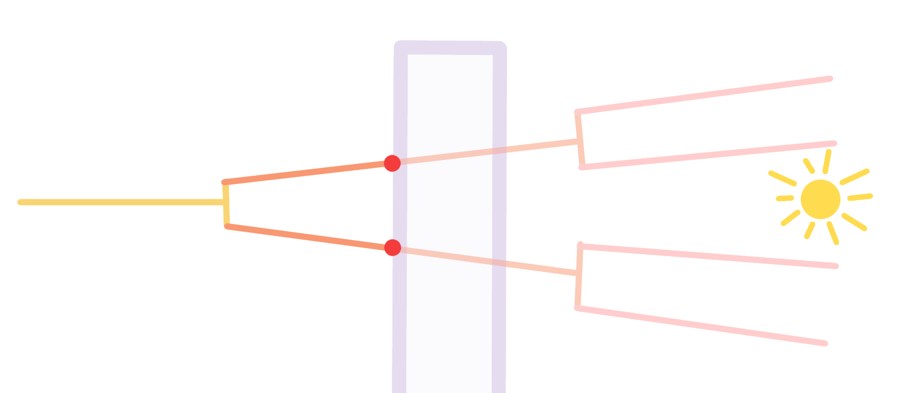
Here the middle interval is blocked, so we should not merge the light from the last interval, or it will leak in front of the wall
// HLSL, Compute: "Merging.hlsl"
#include "HashTable.hlsl"
RWStructuredBuffer‹uint› ActiveProbes;
RWStructuredBuffer‹uint› ActiveCounter;
uint Cascade;
RWStructuredBuffer‹uint4› TotalRadiance;
RWStructuredBuffer‹uint› Weights;
RWStructuredBuffer‹uint› DepositCounts;
//Seperate outputbuffer our merging outputs into
RWStructuredBuffer‹float4› MergedRadiance;
[numthreads(64, 1, 1)]
void MainCS(uint DispatchThreadId : SV_DispatchThreadID)
{
uint ProbeId = DispatchThreadId;
// Check that we are in scope
if (ProbeId >= ActiveCounter[0])
{
return;
}
//Get current probe
uint ProbeIndex = ActiveProbes[ProbeId];
uint64_t ProbeKey = HashTable[(Cascade) * HashTableSize + ProbeIndex];
ProbeKeyInfo KeyData = UnpackProbeKey(ProbeKey);
//The parent cell is bigger so halve its position
int3 ParentCell = (KeyData.Cell - 1) >> 1;
//Direction count of this cascade
uint DirectionCount = BaseDirections ‹‹ Cascade;
uint CascadeIndex = Cascade * HashTableSize * BinsPerProbe(BaseDirections);
uint ParentCascadeIndex = (Cascade + 1) * HashTableSize * BinsPerProbe(BaseDirections);
uint ParentDirCount = BaseDirections ‹‹ (Cascade + 1);
for (int i = 0; i ‹ BinsPerProbe(DirectionCount); ++i)
{
//Load own Radiance
uint SlotIndex = CascadeIndex + ProbeIndex * BinsPerProbe(DirectionCount) + i;
//How much rays got into this bin.
float Weight = UnpackFloatUnsigned(Weights[SlotIndex]);
uint4 PackedRadiance = TotalRadiance[SlotIndex];
float4 UnpackedRadiance = float4(UnpackFloatUnsigned(PackedRadiance.x), UnpackFloatUnsigned(PackedRadiance.y),
UnpackFloatUnsigned(PackedRadiance.z), UnpackFloatUnsigned(PackedRadiance.w));
float3 CurrentRadiance = UnpackedRadiance.xyz / Weight;
//Amount of transmission through this probe, based on the rays that traveled through but didnt hit.
float TransmittedWeight = UnpackedRadiance.w / Weight;
float3 ParentRadiance = 0;
//Cant merge the parent of the highest cascade
if (Cascade ‹ NumCascades - 1)
{
uint64_t ParentCascadeKey = PackProbeKey(ParentCell);
uint ParentIndex = Hash(uint(ParentCascadeKey) ^ Hash(uint(ParentCascadeKey >> 32)));
bool Found = HashTableFind(CascadeKey, Cascade + 1, [&]: ParentIndex);
if (Found)
{
// The parent has 4 times as much directions, so go over the 4 directions in the parent
float4 DirRadiance = 0;
for (uint d = 0; d ‹ 4; ++d)
{
uint ParentSlotIndex = ParentCascadeIndex + ParentIndex * BinsPerProbe(ParentDirCount) + i * 4 + d;
DirRadiance += MergedRadiance[ParentSlotIndex];
}
ParentRadianceSum = (DirRadiance.xyz / DirRadiance.w);
}
}
MergedRadiance[SlotIndex] = (Weight ‹= 0.0001)
? 0
: float4(CurrentRadiance + ParentRadiance * TransmittedWeight, 1);
}
}
This merges our directions from the closest probe, Instead we want to check all the above probes
and blend between them.
For this we need to keep in mind probe spacing, each lower cascade
has 4 probes inside 1 upper probe. So we shouldnt evenly blend.
It's also important to keep in mind that our grid is sparse, meaning the 8 surrounding probes
will probably not all be there.
This can be resolved by only weighing and sampling the
probes that actually exist.
Additionally not all our probes are of the same quality. The amount of rays a probe contains and
thus how accurate it is, is
based on its visibility on the screen.
We should also adjust for this, giving a higher
weight to probes that contain more rays.
// HLSL, Compute: "Merging.hlsl"
#include "HashTable.hlsl"
RWStructuredBuffer‹uint› ActiveProbes;
RWStructuredBuffer‹uint› ActiveCounter;
uint Cascade;
RWStructuredBuffer‹uint4› TotalRadiance;
RWStructuredBuffer‹uint› Weights;
RWStructuredBuffer‹uint› DepositCounts;
//Seperate outputbuffer our merging outputs into
RWStructuredBuffer‹float4› MergedRadiance;
[numthreads(64, 1, 1)]
void MainCS(uint DispatchThreadId : SV_DispatchThreadID)
{
uint ProbeId = DispatchThreadId;
// Check that we are in scope
if (ProbeId >= ActiveCounter[0])
{
return;
}
//Get current probe
uint ProbeIndex = ActiveProbes[ProbeId];
uint64_t ProbeKey = HashTable[(Cascade) * HashTableSize + ProbeIndex];
ProbeKeyInfo KeyData = UnpackProbeKey(ProbeKey);
//The parent cell is bigger so halve its position
int3 ParentCell = (KeyData.Cell - 1) >> 1;
//Get the part of the corner we are in, this is needed so we can weigh by the corner, <changed>
// since we sit at 75% to the nearest parent and 25% to the furthest on each axis <changed>
int3 NearCorner = ~KeyData.Cell & 1; <changed>
//Direction count of this cascade
uint DirectionCount = BaseDirections ‹‹ Cascade;
uint CascadeIndex = Cascade * HashTableSize * BinsPerProbe(BaseDirections);
uint ParentCascadeIndex = (Cascade + 1) * HashTableSize * BinsPerProbe(BaseDirections);
uint ParentDirCount = BaseDirections ‹‹ (Cascade + 1);
for (int i = 0; i ‹ BinsPerProbe(DirectionCount); ++i)
{
//Load own Radiance
uint SlotIndex = CascadeIndex + ProbeIndex * BinsPerProbe(DirectionCount) + i;
//Weight of this bin, this was based on how much rays got binned into it.
float Weight = UnpackFloatUnsigned(Weights[SlotIndex]);
uint4 PackedRadiance = TotalRadiance[SlotIndex];
float4 UnpackedRadiance = float4(UnpackFloatUnsigned(PackedRadiance.x), UnpackFloatUnsigned(PackedRadiance.y),
UnpackFloatUnsigned(PackedRadiance.z), UnpackFloatUnsigned(PackedRadiance.w));
float3 CurrentRadiance = UnpackedRadiance.xyz / Weight;
//Amount of transmission through this probe, based on the rays that traveled through but didnt hit.
float TransmittedWeight = UnpackedRadiance.w / Weight;
float3 ParentRadianceSum = 0; <changed>
float ParentRadianceWeight = 0; <changed>
//Cant merge the parent of the highest cascade
if (Cascade ‹ NumCascades - 1)
{
//Trilinearly interpolate each of the 8 probes above us <changed>
for (uint c = 0; c ‹ 8; ++c) <changed>
{ <changed>
int3 Offset = int3(c & 1, (c >> 1) & 1, c >> 2); <changed>
int3 Corner = ParentCell + Offset; <changed>
//Trilinear weight based on where we are compared to parent <changed>
float3 AxisWeight = Offset == NearCorner ? 0.75 : 0.25; <changed>
float InterpWeight = AxisWeight.x * AxisWeight.y * AxisWeight.z; <changed>
uint64_t ParentCascadeKey = PackProbeKey(Corner); <changed>
uint ParentIndex = Hash(uint(ParentCascadeKey) ^ Hash(uint(ParentCascadeKey >> 32)));
bool Found = HashTableFind(CascadeKey, Cascade + 1, [&]: ParentIndex);
if (Found)
{
//Weight of this probe, this was based on how much rays got binned into it. <changed>
uint DepositCount = DepositCounts[((Cascade + 1) * HashTableSize) + ParentIndex]; <changed>
//Empty probes have no contribution <changed>
if (DepositCount ‹= 0) <changed>
{ <changed>
continue; <changed>
} <changed>
// The parent has 4 times as much directions, so go over the 4 directions in the parent
float4 DirRadiance = 0;
for (uint d = 0; d ‹ 4; ++d)
{
uint ParentSlotIndex = ParentCascadeIndex + ParentIndex * BinsPerProbe(ParentDirCount) + i * 4 + d;
DirRadiance += MergedRadiance[ParentSlotIndex];
}
if (DirRadiance.w > 0.0) <changed>
{ <changed>
float DepositQuality = UnpackFloatUnsigned(DepositCount); <changed>
float QualityInterpWeight = InterpWeight * DepositQuality; <changed>
ParentRadianceSum += (DirRadiance.xyz / DirRadiance.w) * QualityInterpWeight; <changed>
//Accumulate weight, since some probes are skipped <changed>
ParentRadianceWeight += QualityInterpWeight; <changed>
} <changed>
}
} <changed>
}
//Normalize parent <changed>
float3 ParentRadiance = ParentRadianceWeight > 0.00001 ? (ParentRadianceSum / ParentRadianceWeight) : 0; <changed>
MergedRadiance[SlotIndex] = (Weight ‹= 0.0001)
? 0
: float4(CurrentRadiance + ParentRadiance * TransmittedWeight, 1);
}
}
With this we now have our full ray inside of the lowest cascade.
To display this in our output shader, we have to merge the directions of the cascade into 1
value for each pixel, using the normal of the pixel to weigh the probes.
// HLSL, Compute: "Output.hlsl"
... Find probe of the pixel
... Trilinearly interpolate probes
float3 TotalRadiance = 0;
float TotalWeight = 0;
for (uint i = 0; i ‹ BinsPerProbe(DirectionCount); ++i)
{
float3 Dir = LinearToDir(i, DirectionCount);
//We have to normalize by NDotL to keep correct incomming light
float NdotL = max(0.0, dot(Dir, Normal));
if (NdotL ‹= 0)
{
continue;
}
uint CascadeIndex = DisplayCascade * HashTableSize * BinsPerProbe(BaseDirections);
uint BuffIndex = CascadeIndex + Index * BinsPerProbe(DirectionCount) + i;
float4 MergedRad = ProbeMergedRadiance[BuffIndex];
if (MergedRad.w > 0.0)
{
float Weight = NdotL * UnpackFloatUnsigned(DepositCount);
TotalRadiance += MergedRad.xyz * Weight;
TotalWeight += Weight;
}
}
//Renormalize
if (TotalWeight > 0.0)
{
RadSum += TotalWeight >= 0 ? (TotalRadiance / TotalWeight) * InterpWeight * LodWeights[Level] : 0;
WeightSum += InterpWeight * (LodWeights[Level]);
}
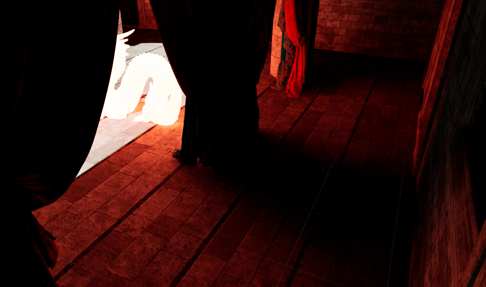
LODs
Currently we had a even grid of probes, which works fine for small scenes. But our probes get
very small on the screen further away.
This has 2 major problems.
We shoot our rays from
the screen, so the number of rays in a probe is based on how many pixels it occupies on the
screen. So very small probes only get one ray or maybe even less.
Secondly the amount of
probes we spawn explodes further away which costs a lot of memory and cost to merge.
By
adding a form of LODs to our probes we solve both these problems, at only the cost of lower
resolution lighting far away.
This is very similar to cascades shadow maps which makes naming
confusing and thus we call them LODs/Levels.
For each higher LOD we also halve the
resolution
similarly to our higher cascades although we keep the direction count the same.
To do this we just halve our cell position each level. However for this we need to add a level
index to our per probe key.
We need to do this since our halved positions can overlap with
the
lower level.
We can just bitshift this index after the rest of our key.
Since
everything else uses the hashmap, this should automatically work with the rest of our code
assuming we calculate the key in the same way.
// HLSL,
//We compute the level based on distance to the camera
uint ComputeLevel(float3 WorldPos, float3 CameraPos)
{
//Using Chebyshev distance, aka distance as a square this makes the transition less noticable.
float3 Distance = abs(WorldPos - CameraPos);
float Radius = max(Distance.x, max(Distance.y, Distance.z));
float LodFloat = log2(Radius / LevelBaseDist);
uint Lower = clamp((uint)ceil(LodFloat), 0, MaxLOD);
return Lower;
}
//Everywhere where we use the voxel size, we should instead use the size based on the level
float LevelVoxelSize(uint Level)
{
return BaseVoxelSize * (float)(1u ‹‹ Level);
}
uint64_t MakeProbeKey(float3 WorldPos, float3 CameraPos)
{
uint Level = ComputeLevel(WorldPos, CameraPos);
float VoxelSize = LevelVoxelSize(Level);
int3 Cell = int3(floor((WorldPos / VoxelSize)));
return PackProbeKey(Cell, Level);
}
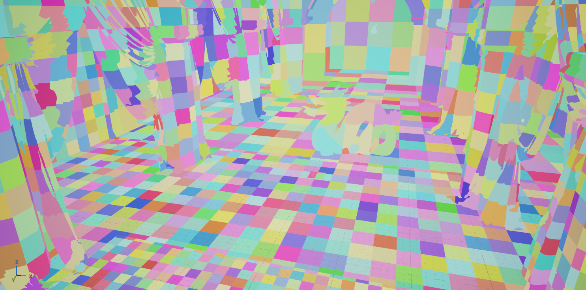
This fixes a lot of flickering or overallocation further away, however it creates big seams where
the
LODs change.
So we want to blend in between these seams. To do this we keep one probe of
overlap at the seam, allocating probes of both levels and also binning the ray into
both.
Wherever we calculate our level we instead calculate the range, making sure to keep
correct weights so we do not double the light at the seam.
// HLSL, Compute:
//Compute a range instead, outputs weights so that we blend correctly on the seam.
void ComputeLevelRange(float3 WorldPos, float3 CameraPos, out uint2 Lods, out float2 LodWeights)
{
float3 Distance = abs(WorldPos - CameraPos);
float Radius = max(Distance.x, max(Distance.y, Distance.z));
float LodFloat = log2(Radius / LevelBaseDist);
float Blend = min(1.0, (1.0 - frac(LodFloat))); <changed>
uint Lower = clamp((uint)ceil(LodFloat), 0, kMaxLevel);
Lods = uint2(Lower, Lower + 1); <changed>
LodWeights = float2(Blend, 1.0 - Blend); <changed>
}
//When depositing and applying
//We loop over the range and deposit/apply both levels, following their weights.
This should result in smooth, although flickering results
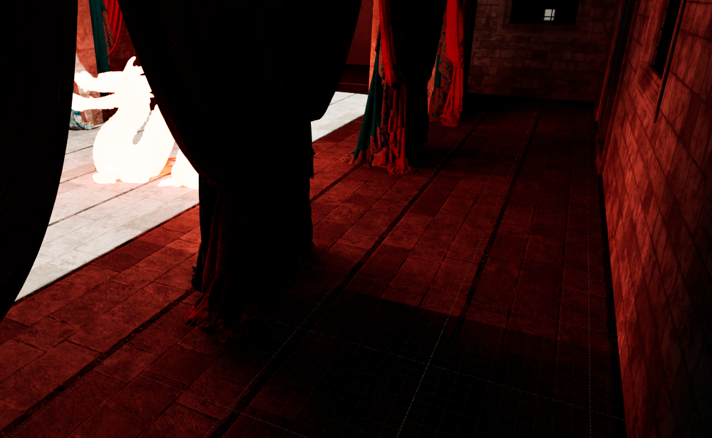
Temporal
Due to the benefits of splitting & merging with RC our single frame result is already pretty
good.
But since we still send random rays, there is still some flickering especially in
probes that did not get much rays.
We can fix this by accumulating our probes over time,
this doesnt come with the drawbacks of most temporal effects.
Since our probes are spatially stable, there is no smearing from bad reprojection.
And since our single frame results are also pretty good already there is barely any
ghosting.
So the only drawback is slower lighting updates.
Stable hash table
Currently we clear and allocate the hashtable every frame, so our probe index moves every frame.
To temporally accumulate we want our probes to keep the same index, so that we keep the old
frame's result in their spot in the buffer.
One way of doing this is by adding a layer of indirection to our hashtable, instead of storing
the index into our data buffer in the table we store an index into another list of indices.
That way we can add a pass that re-allocates our previous frames results with the same index as
the data.
We also need to keep track of the lifetime of probes, to know which probes to reallocate or not.
Resetting their lifetime if they are on screen.
// HLSL, Compute:
#include "StableHashTable.hlsl"
RWStructuredBuffer‹uint› ProbeLifetime;
RWStructuredBuffer‹uint› ActiveProbes;
RWStructuredBuffer‹uint› ActiveCounter;
float HistoryConservation;
RWStructuredBuffer‹uint4› TotalRadiance;
RWStructuredBuffer‹uint› ProbeWeights;
RWStructuredBuffer‹uint› DepositCounts;
//This should be launched for the maximum amount of probes, each thread reallocating that probe if its there
[numthreads(64, 1, 1)]
void MainCS(uint DispatchThreadId : SV_DispatchThreadID)
{
uint DataKeyId = DispatchThreadId;
//Get which cascade this probe belongs to
uint Table = DataKeyId / MaximumProbes;
uint Local = DataKeyId - BaseTable * MaximumProbes;
if (Table ›= NumCascades || Local ›= (MaximumProbes ›› (2 * BaseTable)))
{
return;
}
uint64_t Key = TableKeys[DataKeyId];
//If the key is invalid i.e. the clear value of 0 dont de or re allocate
bool Occupied = Key != 0;
if (Occupied)
{
//Remove older probes, ProbeLifetime should be reset whenever the probe is used, i.e. inside of the probe gathering and cascade filling passes
if (ProbeLifetime[DataKeyId] == 0)
{
TableKeys[DataKeyId] = 0;
Occupied = false;
//Clear probe data
DepositCounts[DataKeyId] = 0;
uint LocalIndex = DataKeyId - Table * MaximumProbes;
uint CascadeIndex = Table * MaximumProbes * BinsPerProbe(BaseDirections);
uint Bins = BinsPerProbe(BaseDirections ‹‹ Table);
//Clear each direction bin
for (int i = 0; i ‹ Bins; ++i)
{
uint SlotIndex = CascadeIndex + LocalIndex * Bins + i;
TotalRadiance[SlotIndex] = 0;
ProbeWeights[SlotIndex] = 0;
}
}
else
{
// Re-add surviving probe
// Reduce its lifetime
ProbeLifetime[DataKeyId] -= 1;
//Add it to the hashtable with the same index as last frame
uint64_t Key = TableKeys[DataKeyId];
uint LocalIndex = DataKeyId - Table * MaximumProbes;
HashTableAddIndex(Key, Table, LocalIndex);
//Add it to the active list,
uint ActiveIndex;
InterlockedAdd(ActiveCounter[Table], 1, ActiveIndex);
ActiveProbes[Table * MaximumProbes + ActiveIndex] = LocalIndex;
}
}
//Add any unoccupied (or just deallocated) probe to the freelist for the hashtable to use
if (!Occupied)
{
uint FreeListIndex;
InterlockedAdd(TableFreeListIndex[Table], 1, FreeListIndex);
uint LocalIndex = DataKeyId - Table * MaximumProbes;
TableFreeList[FreeListIndex] = LocalIndex;
}
}
//Make sure to clear the freelistindex counter to the table's start after this
The hashtable should now be stable, you can test this using the debug output code from earlier,
outputting the index. Probes shouldn't change color unless they go off the screen.
With stable probes temporaly accumulating is easy, when going over the probes (in the merge pass
or in a seperate pass) we just re-add the probes accumulated light and weights with a falloff.
With that you should now have clean single bounce GI.
Multi bounce
Currently light only bounces once from where we are looking, things only start looking really
good when we do multiple bounces.
To achieve this we need to trace 1 extra bounce ray everywhere, from which we can get infinite
bounces over time.
To get one bounce, we just shoot an extra light ray from the hits of our primary ray.
To do this we output our hit positions and normals in our ray generation shader, then run a
second one from that spot.
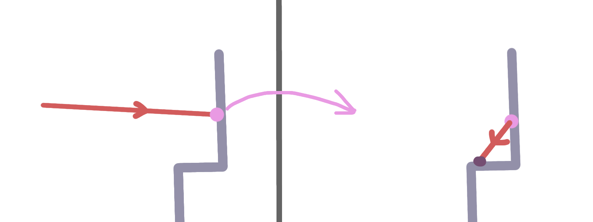
The first hit is stored, then another random ray is sent from that hit position
This gives us a single real bounce, but increasing this to more would be very expensive.
Instead we can sample the probes to apply GI to this, with the temporal accumulation that gives
us an extra bounce every frame.
However since our probes are only allocate where we are looking, we wouldn't be able to get this
bounce light from outside of the screen, since there are no probes to sample from.
To resolve this we allocate a seperate secondary probe cache for this, we allocate extra probes
at the hit positions of our primary ray. We fill these with radiance from the bounce ray, in the
same way as our primary ray.
To accumulate this to multiple bounces, we sample this cache at the hits of our primary and
secondary rays.
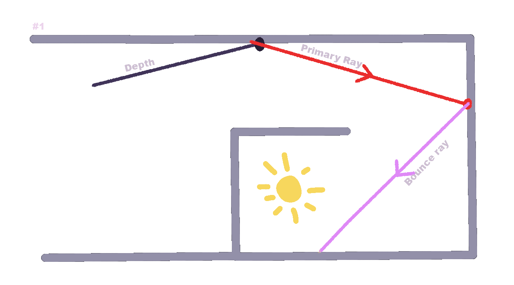
In one frame we send the primary ray, which allocates a
probe filled with the bounce ray.
The next frame a different bounce ray hits the same secondary probe. Since it samples it also
contains the previous bounce.
Over frames this stacks to infinite bounces
This gives us infinite bounces, however it is limited to only the area covered by the single
bounce ray, since that one allocates the secondary probes.
We can re-use almost our whole
system for this secondary probe. We already have LODs over distance, by allocating the secondary
probes at at least 2 LODs higher it can fit into the same hashtable/probes without conflicts.
If we also add these to the active probes the merge pass will merge their cascades as
well.
With that we get nice looking multi bounce GI.
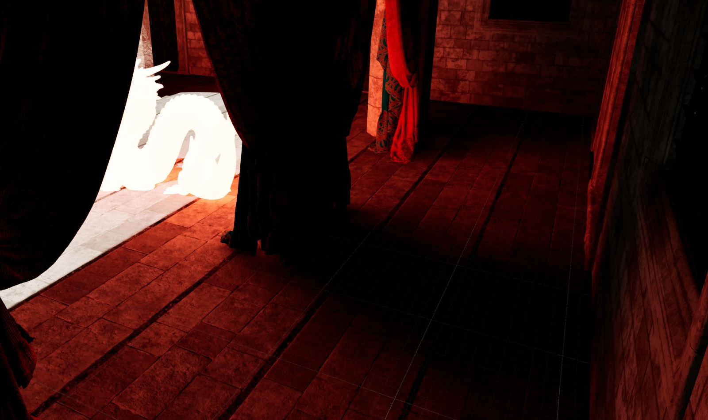
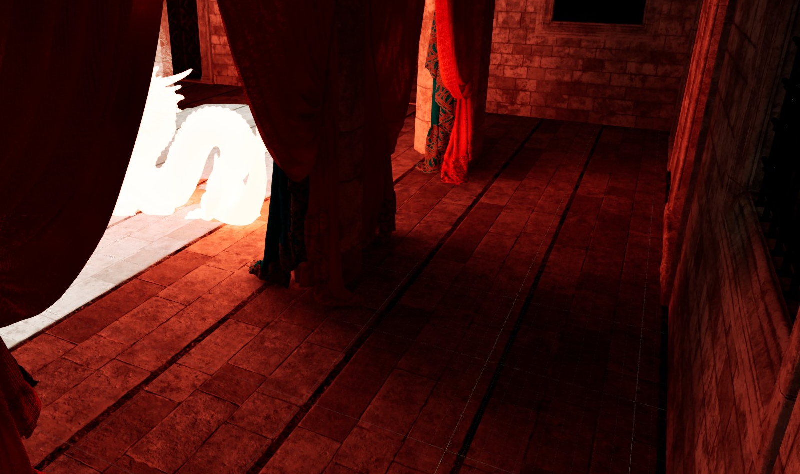
Basic optimizations & improvements
For simplicity I kept out a lot of optimizations or better ways to do things.
I wont go over how to fully optimize but will briefly go over the main improvements that can be
done to get this running good.
Choosing directions
One big improvement in quality is choosing directions in a better way, currently we choose
completely random directions.
But there are multiple semi random sequences that accumulate to
good results significantly quicker.
By using a deposit count per probe as an index into
something like the R2 sequence, direction coverage accumulates significantly faster.
Group sharing
Apart from tracing our merging & applying pass is the most expensive.
It's sampling a lot of
data across a low amount of threads.
For example the bin merging can be done across threads,
loading the 8 probes together and having each thread load a bin.
Merging them as a group.
Lowering ray count
Raytracing cost is by far the most expensive part,
We can skip a percentage of pixels every
frame to reduce cost significantly, although at the drawback of slower accumulation and thus
more ghosting.
Balancing this with probe sizes can improve the accumulation but at the cost
of light resolution.
This allows for a nice way of tweaking quality vs performance.
It might also be worth replacing (some of) the rays with cheaper ones like screen space rays or
sampling an sdf or voxel approximation of the world
Conclusions
Performance
Almost all of the cost of this goes to actual tracing.
For my implemention in unreal on my 5070 Laptop GPU in San Miguel the
cost of RC is about ~2ms depending on probe sizing.
Although with ~13ms on top of raytracing
at 2spp (1
primary 1 bounce) and ~2ms for depositing the rays.
Although the expensive tracing cost
is very variable, depending on scene size and tracing performance in general.
Comparisons/Showcase
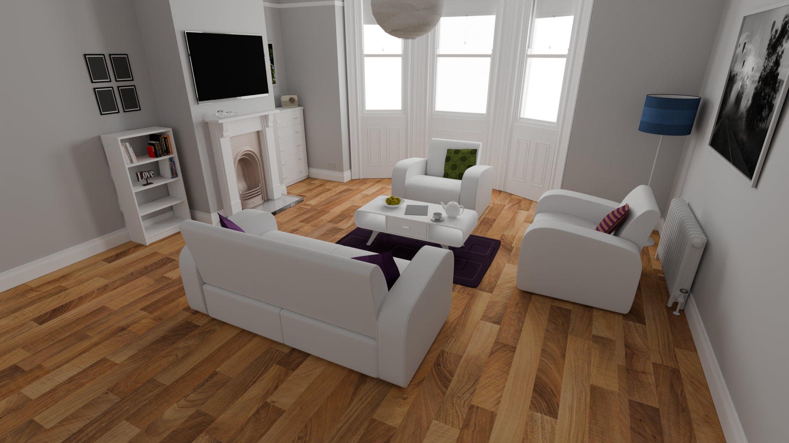
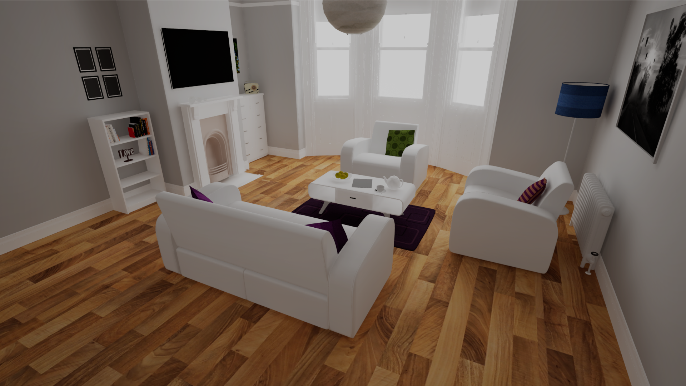
The main points of error are, light leaking in spots smaller than a (secondary) probe, and softer shadows (presumably due to not enough base directions)